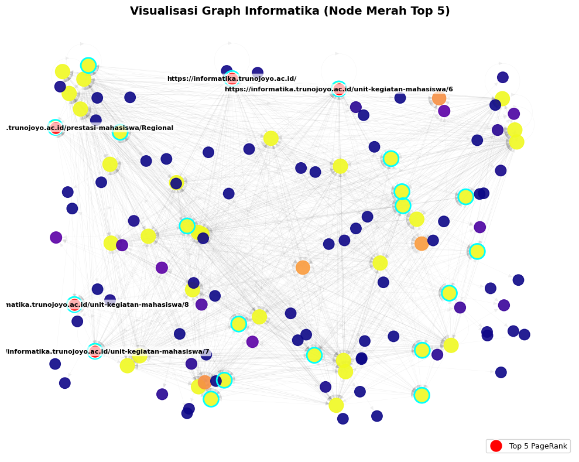
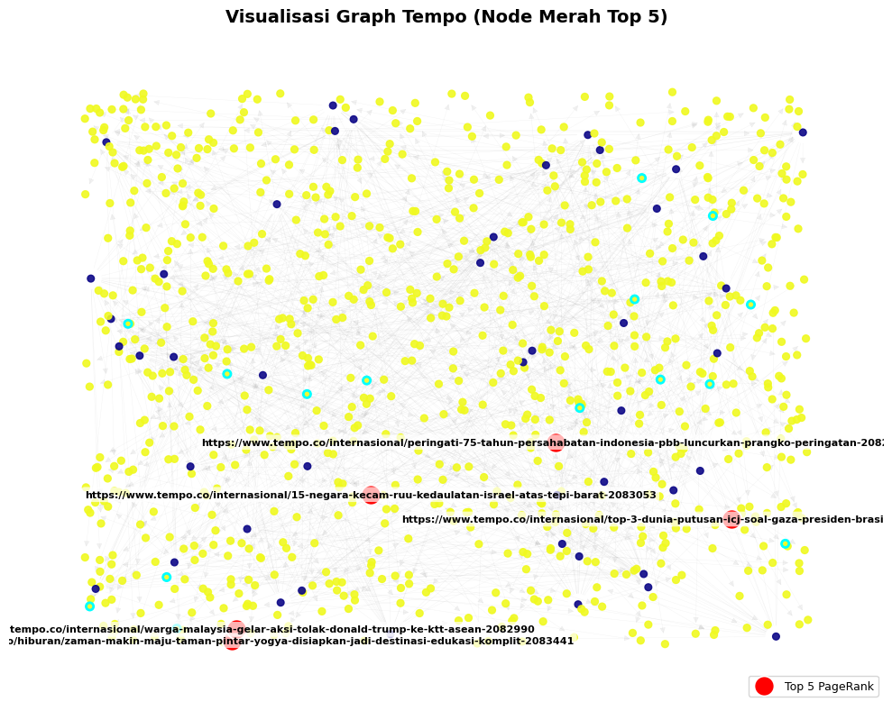

Page Rank#
Latihan Page Rank#
import numpy as np
def pagerank(adj_matrix, d=0.85, max_iter=100, tol=1e-6):
"""
Hitung PageRank dari matriks adjacency.
Parameters:
adj_matrix : array-like, shape (n, n)
Matriks adjacency (1 jika ada link i -> j)
d : float
Damping factor (default: 0.85)
max_iter : int
Maksimum iterasi
tol : float
Toleransi konvergensi
Returns:
r : ndarray, shape (n,)
Vektor PageRank
"""
adj = np.array(adj_matrix, dtype=float)
n = adj.shape[0]
# Tangani dangling nodes (baris dengan jumlah 0)
out_degree = np.sum(adj, axis=1)
for i in range(n):
if out_degree[i] == 0:
adj[i, :] = 1.0 # taut ke semua halaman
# Normalisasi baris → jadi matriks transisi (baris jumlah = 1)
# TAPI: PageRank asli menggunakan TRANSPOSE → aliran masuk
# Jadi kita transpos untuk membuat kolom = out-link
M = adj / np.sum(adj, axis=1, keepdims=True)
M = M.T # Sekarang M[j,i] = probabilitas dari i ke j
# Inisialisasi
r = np.ones(n) / n
teleport = (1 - d) / n
for _ in range(max_iter):
r_new = d * M @ r + teleport
if np.linalg.norm(r_new - r, 1) < tol:
break
r = r_new
return r
# Contoh penggunaan
if __name__ == "__main__":
# Graf: 0 → 1, 0 → 2, 1 → 2, 2 → 0
A = [
[0, 1, 1], # 0 links to 1 and 2
[0, 0, 1], # 1 links to 2
[1, 0, 0], # 2 links to 0
]
pr = pagerank(A)
print("PageRank:")
for i, score in enumerate(pr):
print(f"Node {i}: {score:.4f}")
PageRank:
Node 0: 0.3878
Node 1: 0.2148
Node 2: 0.3974
import networkx as nx
G = nx.DiGraph()
G.add_edges_from([(0, 1), (0, 2), (1, 2), (2, 0)])
pr = nx.pagerank(G, alpha=0.85)
print(pr)
{0: 0.387789442707259, 1: 0.21481051315058508, 2: 0.3974000441421556}
Page Rank menggunakan data dari yang diberikan di kelas#
import pandas as pd
import networkx as nx
import matplotlib.pyplot as plt
import numpy as np
# === 1️⃣ Baca file edgelist ===
file_name = 'web-Google_10k.txt'
try:
G = nx.read_edgelist(
file_name,
comments='#',
create_using=nx.DiGraph(),
nodetype=int
)
print(f"✅ Berhasil membaca file: {file_name}")
print(f"Jumlah node: {G.number_of_nodes()}")
print(f"Jumlah edge: {G.number_of_edges()}")
except FileNotFoundError:
print(f"❌ File '{file_name}' tidak ditemukan.")
except Exception as e:
print(f"Terjadi error saat membaca file: {e}")
# === 2️⃣ Hitung PageRank ===
pagerank = nx.pagerank(G, alpha=0.85)
pagerank_df = pd.DataFrame(list(pagerank.items()), columns=["Node", "PageRank"]).sort_values("PageRank", ascending=False)
# === 3️⃣ Ambil 5 node dengan PageRank tertinggi ===
top5_nodes = pagerank_df.head(5)["Node"].tolist()
print("\n🏆 Top 5 PageRank tertinggi:")
print(pagerank_df.head(5))
# === 4️⃣ Layout dan warna ===
np.random.seed(42) # agar warna konsisten tiap run
pos = nx.random_layout(G) # layout ringan untuk graf besar
node_colors = np.random.rand(len(G.nodes()), 3) # RGB acak untuk semua node
# === 5️⃣ Visualisasi ===
plt.figure(figsize=(18, 14))
# Semua node (warna-warni acak)
nx.draw_networkx_nodes(
G, pos,
node_size=8,
node_color=node_colors,
alpha=0.8
)
# 5 node penting (warna merah, ukuran besar)
nx.draw_networkx_nodes(
G, pos,
nodelist=top5_nodes,
node_color="red",
node_size=150,
label="Top 5 PageRank"
)
# Garis edge abu-abu muda agar tidak berat
nx.draw_networkx_edges(G, pos, width=0.25, alpha=0.15, arrows=False)
# Label hanya untuk 5 node penting
labels = {n: str(n) for n in top5_nodes}
nx.draw_networkx_labels(G, pos, labels=labels, font_color="black", font_size=9)
plt.title("Visualisasi Graph 10.000 Node (RGB Colors + 5 PageRank Tertinggi)", fontsize=16)
plt.legend(scatterpoints=1)
plt.axis("off")
plt.show()
✅ Berhasil membaca file: web-Google_10k.txt
Jumlah node: 10000
Jumlah edge: 78323
🏆 Top 5 PageRank tertinggi:
Node PageRank
994 486980 0.006515
3849 285814 0.004633
113 226374 0.003301
2847 163075 0.003288
5214 555924 0.002756
Page Rank menggunakan data keluaran link teknik informatika#
# BAGIAN 1: Import Library dan Baca File
import pandas as pd
import networkx as nx
import matplotlib.pyplot as plt
import numpy as np
file_name = 'semua_link_informatika2.csv'
try:
# Baca file CSV tanpa header (diasumsikan 2 kolom: source & target)
df = pd.read_csv(file_name, header=None)
# Buat graf berarah dari dua kolom pertama
G = nx.from_pandas_edgelist(
df,
source=0,
target=1,
create_using=nx.DiGraph()
)
print(f"✅ Berhasil membaca file: {file_name}")
print(f"Jumlah node: {G.number_of_nodes()}")
print(f"Jumlah edge: {G.number_of_edges()}")
except FileNotFoundError:
print(f"❌ File '{file_name}' tidak ditemukan. Pastikan file berada di dalam.")
except Exception as e:
print(f"⚠️ Terjadi error saat membaca file: {e}")
✅ Berhasil membaca file: semua_link_informatika2.csv
Jumlah node: 1681
Jumlah edge: 1653
# BAGIAN 2: Periksa isi dataset dan jumlah edge
edges = pd.read_csv(
file_name,
comment="#",
header=None,
names=["FromNodeId", "ToNodeId"],
engine="python",
sep=None, # auto deteksi delimiter
on_bad_lines="skip" # lewati baris rusak
)
edges = edges.dropna(subset=["FromNodeId", "ToNodeId"])
print(f"Jumlah edges: {len(edges)}")
print(edges.head())
Jumlah edges: 1653
FromNodeId \
1 https://informatika.trunojoyo.ac.id/
2 https://informatika.trunojoyo.ac.id/
3 https://informatika.trunojoyo.ac.id/
4 https://informatika.trunojoyo.ac.id/
5 https://informatika.trunojoyo.ac.id/
ToNodeId
1 https://informatika.trunojoyo.ac.id/
2 https://informatika.trunojoyo.ac.id/bidang-min...
3 https://informatika.trunojoyo.ac.id/bidang-min...
4 https://informatika.trunojoyo.ac.id/bidang-min...
5 https://informatika.trunojoyo.ac.id/bidang-min...
# BAGIAN 3: Buat Graph dari edges
edges = edges.dropna(subset=["FromNodeId", "ToNodeId"])
try:
edges["FromNodeId"] = edges["FromNodeId"].astype(int)
edges["ToNodeId"] = edges["ToNodeId"].astype(int)
except:
pass # kalau bukan angka, biarkan string
G = nx.DiGraph()
G.add_edges_from(edges[["FromNodeId", "ToNodeId"]].values)
print(f"Jumlah node dalam graph: {G.number_of_nodes()}")
print(f"Jumlah edge dalam graph: {G.number_of_edges()}")
Jumlah node dalam graph: 130
Jumlah edge dalam graph: 1492
# BAGIAN 4: Hitung PageRank dan cari node penting
pagerank = nx.pagerank(G, alpha=0.85, max_iter=100, tol=1e-06)
pagerank_df = (
pd.DataFrame(list(pagerank.items()), columns=["Node", "PageRank"])
.sort_values("PageRank", ascending=False)
.reset_index(drop=True)
)
print("🏆 Top 5 Node dengan PageRank Tertinggi:")
print(pagerank_df.head(5))
🏆 Top 5 Node dengan PageRank Tertinggi:
Node PageRank
0 https://informatika.trunojoyo.ac.id/ 0.010508
1 https://informatika.trunojoyo.ac.id/prestasi-m... 0.010508
2 https://informatika.trunojoyo.ac.id/unit-kegia... 0.010508
3 https://informatika.trunojoyo.ac.id/unit-kegia... 0.010508
4 https://informatika.trunojoyo.ac.id/unit-kegia... 0.010508
# CELL 5: Visualisasi Graph Informatika (Warna Cerah, Outline Kontras - Versi Ringkas)
import matplotlib.pyplot as plt
import networkx as nx
# Tutup figure sebelumnya jika masih aktif
plt.close('all')
# Ukuran figure lebih kecil
fig, ax = plt.subplots(figsize=(10, 8))
# Layout ringan tapi stabil
pos = nx.random_layout(G, seed=42)
# Warna node berdasarkan nilai PageRank
node_colors = [pagerank[n] for n in G.nodes()]
node_sizes = [v * 30000 for v in pagerank.values()] # sebelumnya 50000 → diperkecil
# Ambil Top 5 & Top 20 berdasarkan PageRank
top5_nodes = pagerank_df.head(5)["Node"].tolist()
top20_nodes = pagerank_df.head(20)["Node"].tolist()
top5_labels = {n: str(n) for n in top5_nodes}
# =========================
# Gambar Semua Node (Gradasi)
# =========================
nx.draw_networkx_nodes(
G, pos,
node_size=node_sizes,
node_color=node_colors,
cmap=plt.cm.plasma,
alpha=0.9,
ax=ax
)
# =========================
# Outline untuk Top 20 Node
# =========================
nx.draw_networkx_nodes(
G, pos,
nodelist=top20_nodes,
node_size=[pagerank[n]*33000 for n in top20_nodes], # sebelumnya 55000
node_color='none',
edgecolors="#00FFFF",
linewidths=2,
ax=ax
)
# =========================
# Node Merah untuk Top 5 Node
# =========================
nx.draw_networkx_nodes(
G, pos,
nodelist=top5_nodes,
node_color="red",
edgecolors="white",
linewidths=1.2,
node_size=250, # sebelumnya 350
label='Top 5 PageRank',
ax=ax
)
# =========================
# Edge (transparan tipis)
# =========================
nx.draw_networkx_edges(
G, pos,
alpha=0.1,
width=0.3,
edge_color="gray",
ax=ax
)
# =========================
# Label untuk Top 5 Node
# =========================
nx.draw_networkx_labels(
G, pos,
labels=top5_labels,
font_color="black",
font_size=8,
font_weight="bold",
bbox=dict(facecolor="white", edgecolor="none", alpha=0.7, boxstyle="round,pad=0.3"),
ax=ax
)
# =========================
# Tampilan Akhir
# =========================
ax.set_title(
"Visualisasi Graph Informatika (Node Merah Top 5)",
fontsize=14, fontweight="bold", pad=10
)
ax.legend(scatterpoints=1, fontsize=9, loc="lower right")
ax.axis("off")
plt.tight_layout()
plt.show(block=True)
plt.close(fig)

#
Page Rank Menggunakan Data Link Berita#
import pandas as pd
import networkx as nx
import matplotlib.pyplot as plt
import numpy as np
file_name = 'tempo_links2.csv'
try:
# Baca file CSV tanpa header (diasumsikan 2 kolom: source & target)
df = pd.read_csv(file_name, header=None)
# Buat graf berarah dari dua kolom pertama
G = nx.from_pandas_edgelist(
df,
source=0,
target=1,
create_using=nx.DiGraph()
)
print(f"✅ Berhasil membaca file: {file_name}")
print(f"Jumlah node: {G.number_of_nodes()}")
print(f"Jumlah edge: {G.number_of_edges()}")
except FileNotFoundError:
print(f"❌ File '{file_name}' tidak ditemukan. Pastikan file berada di dalam'.")
except Exception as e:
print(f"⚠️ Terjadi error saat membaca file: {e}")
✅ Berhasil membaca file: tempo_links2.csv
Jumlah node: 945
Jumlah edge: 900
edges = pd.read_csv(
file_name,
comment="#",
header=None,
names=["FromNodeId", "ToNodeId"],
engine="python",
sep=None, # auto deteksi delimiter
on_bad_lines="skip" # lewati baris rusak
)
edges = edges.dropna(subset=["FromNodeId", "ToNodeId"])
print(f"Jumlah edges: {len(edges)}")
print(edges.head())
Jumlah edges: 900
FromNodeId \
2084903 https://www.tempo.co/indeks?page=1&category=ru...
2084893 https://www.tempo.co/indeks?page=1&category=ru...
2084880 https://www.tempo.co/indeks?page=1&category=ru...
2084862 https://www.tempo.co/indeks?page=1&category=ru...
2084860 https://www.tempo.co/indeks?page=1&category=ru...
ToNodeId
2084903 https://www.tempo.co/politik/kemang-tak-bisa-d...
2084893 https://www.tempo.co/politik/dasco-ungkap-alas...
2084880 https://www.tempo.co/politik/nama-soeharto-seb...
2084862 https://www.tempo.co/politik/istana-jelaskan-k...
2084860 https://www.tempo.co/politik/banjir-di-jakarta...
edges = edges.dropna(subset=["FromNodeId", "ToNodeId"])
try:
edges["FromNodeId"] = edges["FromNodeId"].astype(str)
edges["ToNodeId"] = edges["ToNodeId"].astype(str)
except:
pass
# Buat graph berarah
G = nx.DiGraph()
G.add_edges_from(edges[["FromNodeId", "ToNodeId"]].values)
print(f"Jumlah node dalam graph: {G.number_of_nodes()}")
print(f"Jumlah edge dalam graph: {G.number_of_edges()}")
Jumlah node dalam graph: 945
Jumlah edge dalam graph: 900
pagerank = nx.pagerank(G, alpha=0.85, max_iter=100, tol=1e-06)
pagerank_df = (
pd.DataFrame(list(pagerank.items()), columns=["Node", "PageRank"])
.sort_values("PageRank", ascending=False)
.reset_index(drop=True)
)
print("🏆 Top 5 Node dengan PageRank Tertinggi:")
print(pagerank_df.head(5))
🏆 Top 5 Node dengan PageRank Tertinggi:
Node PageRank
0 https://www.tempo.co/hiburan/zaman-makin-maju-... 0.00106
1 https://www.tempo.co/internasional/15-negara-k... 0.00106
2 https://www.tempo.co/internasional/top-3-dunia... 0.00106
3 https://www.tempo.co/internasional/warga-malay... 0.00106
4 https://www.tempo.co/internasional/peringati-7... 0.00106
# CELL 5: Visualisasi Graph Informatika (Warna Cerah, Outline Kontras - Versi Ringkas)
import matplotlib.pyplot as plt
import networkx as nx
# Tutup figure sebelumnya jika masih aktif
plt.close('all')
# Ukuran figure lebih kecil
fig, ax = plt.subplots(figsize=(10, 8))
# Layout ringan tapi stabil
pos = nx.random_layout(G, seed=42)
# Warna node berdasarkan nilai PageRank
node_colors = [pagerank[n] for n in G.nodes()]
node_sizes = [v * 30000 for v in pagerank.values()] # sebelumnya 50000 → diperkecil
# Ambil Top 5 & Top 20 berdasarkan PageRank
top5_nodes = pagerank_df.head(5)["Node"].tolist()
top20_nodes = pagerank_df.head(20)["Node"].tolist()
top5_labels = {n: str(n) for n in top5_nodes}
# =========================
# Gambar Semua Node (Gradasi)
# =========================
nx.draw_networkx_nodes(
G, pos,
node_size=node_sizes,
node_color=node_colors,
cmap=plt.cm.plasma,
alpha=0.9,
ax=ax
)
# =========================
# Outline untuk Top 20 Node
# =========================
nx.draw_networkx_nodes(
G, pos,
nodelist=top20_nodes,
node_size=[pagerank[n]*33000 for n in top20_nodes], # sebelumnya 55000
node_color='none',
edgecolors="#00FFFF",
linewidths=2,
ax=ax
)
# =========================
# Node Merah untuk Top 5 Node
# =========================
nx.draw_networkx_nodes(
G, pos,
nodelist=top5_nodes,
node_color="red",
edgecolors="white",
linewidths=1.2,
node_size=250, # sebelumnya 350
label='Top 5 PageRank',
ax=ax
)
# =========================
# Edge (transparan tipis)
# =========================
nx.draw_networkx_edges(
G, pos,
alpha=0.1,
width=0.3,
edge_color="gray",
ax=ax
)
# =========================
# Label untuk Top 5 Node
# =========================
nx.draw_networkx_labels(
G, pos,
labels=top5_labels,
font_color="black",
font_size=8,
font_weight="bold",
bbox=dict(facecolor="white", edgecolor="none", alpha=0.7, boxstyle="round,pad=0.3"),
ax=ax
)
# =========================
# Tampilan Akhir
# =========================
ax.set_title(
"Visualisasi Graph Tempo (Node Merah Top 5)",
fontsize=14, fontweight="bold", pad=10
)
ax.legend(scatterpoints=1, fontsize=9, loc="lower right")
ax.axis("off")
plt.tight_layout()
plt.show(block=True)
plt.close(fig)
